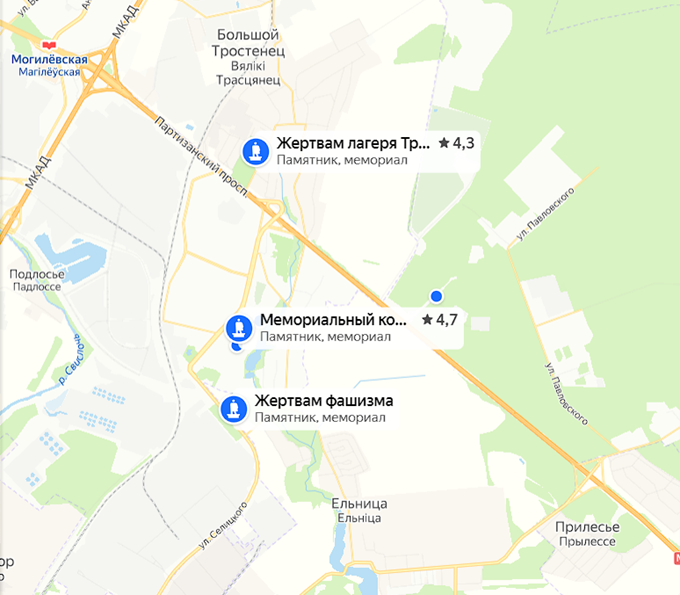

Например, врата памяти:

Или, например, памятник погибшим: Ссылка на панорманое изображение
Моя малая родина - Большой Тростенец. История этой деревни крайне трагична, ведь именно здесь располагался
один из крупнейших концлагерей в Европе.
Достопримечательностей здесь немного, в основном это военные памятники
Например, врата памяти:
Или, например, памятник погибшим:
Ссылка на панорманое изображение
Если захотите посетить мемориальный комплекс "Тростенец", можете руководствоваться следующим изображением:
